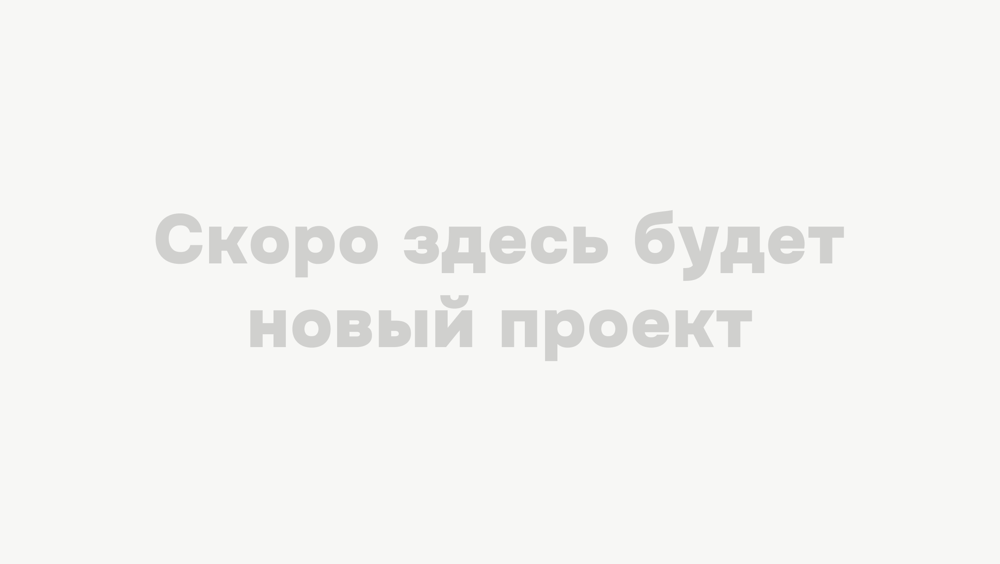

Андрей Лынник
Продуктовый дизайнер, 2 года опыта.
Люблю решать сложные интерфейсные задачи, изучать новые подходы и оптимизировать рутину. Отдельно кайфую от дизайн-систем и верстки
БКС Мир Инветиций
Продуктовый дизайнер
03.2025 — н.в.
Региональный МИАЦ
UX/UI-дизайнер
12.2024 — 01.2025
Студия «Воля»
Веб-дизайнер
04.2024 — 12.2024
Проектная занятость
Веб-дизайнер
08.2023 — 01.2024

